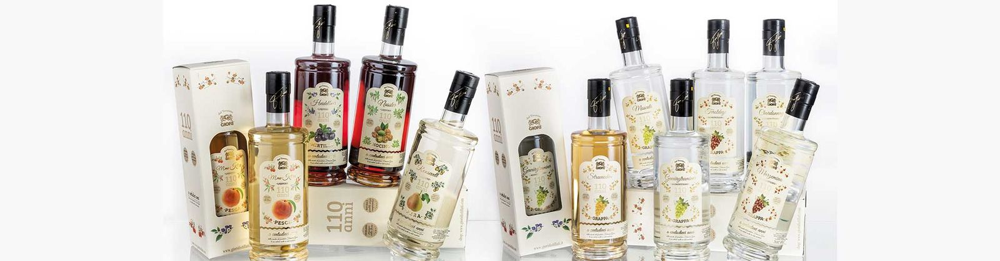
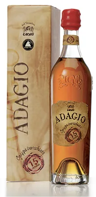
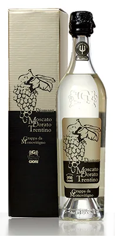
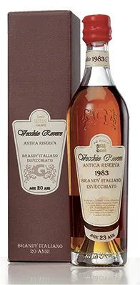
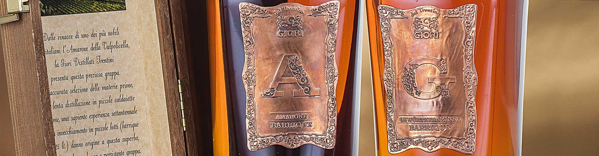
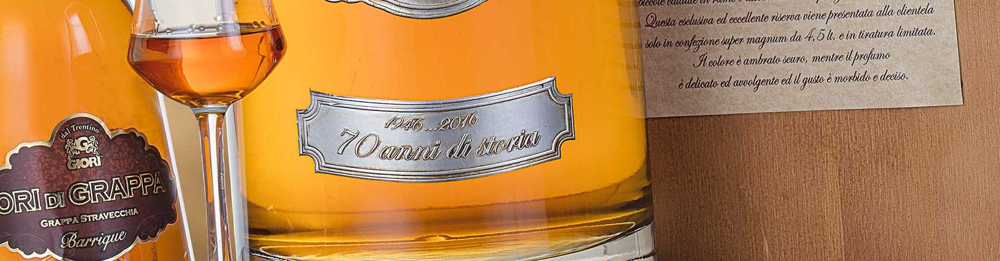

110 anni
Grappe da monovitigno, distillate da una sola qualità d'uva.
- Teroldego
- Chardonnay
- Gewürztraminer
- Marzemino
- Moscato
- Stravecchia
0,70 litri · 40% vol
Grappa è soltanto la bevanda che si ottiene distillando la vinaccia, le bucce e i vinaccioli che restano dopo la spremitura dell'uva. Le nostre nascono dalla distillazione a bagnomaria in piccole caldaie di rame, col metodo discontinuo.
Il colore dice quanto è rimasta nel legno.
Imbottigliate alla fine della distillazione: incolori, profumo delicato, gusto secco, franco, pulito.
Da vinacce di uve aromatiche, come il moscato e il Müller Thurgau.
Con erbe, radici o frutta aggiunte alla grappa.
Almeno 24 mesi in fusti di rovere: dal giallo paglierino all'ambrato carico, gusto morbido.
Tra i riconoscimenti: il premio Alambicco d'oro, il Vinitaly grappa tasting award, il premio Acquaviti d'oro.

Grappe da monovitigno, distillate da una sola qualità d'uva.
0,70 litri · 40% vol

Grappa al fieno invecchiata: unica e inimitabile, dice la sua etichetta.



Adagio, la grappa invecchiata. Vecchio Rovere, il brandy invecchiato. Nelle confezioni da regalo.

Grappe invecchiate con l'etichetta in rame lavorato: una lettera per ogni grappa.

Grappa stravecchia, in barrique.
Distillato di frumento e orzo in alambicchi di rame, tagliando teste e code. Macerati: bacche di ginepro, frutti di bosco e pepe nero. Anche agli agrumi (pompelmo rosa, arancia, peperoncino) e Vegetables (sedano, carota, rosmarino, salvia, prezzemolo, zenzero).